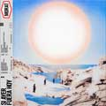

ALBUMS
Sobre el amor y sus efectos secundarios, 2016
Sobre el amor y sus efectos secundarios es el álbum debut del grupo colombiano Morat.
Balas perdidas, 2018
Balas perdidas es un álbum de Morat, una colección de 12 canciones, de las cuales 4 ya son conocidas por su público.
¿A dónde vamos?, 2021
¿A dónde vamos? es el título del tercer álbum de Morat. Un disco con 14 cortes y hasta 9 anticipos.
Si ayer fuera hoy, 2022
i ayer fuera hoy es el cuarto álbum de estudio del grupo colombiano Morat. Grabado en sistema analógico entre Los Ángeles (Estados Unidos) y Bogotá (Colombia).
EP :Antes de que amanezca, 2023
Antes de que amanezca es un extended play de 6 pistas de Morat. Con estas seis canciones la banda busca transportar a quien las oye a viajar a través de una noche de sueños.
Album 1
Album 2
Album 3

Album 4
Album 4
EP
Integrantes Actuales
- Martín Vargas Morales: Batería desde 2016
- Juan Pablo Villamil: Guitarra desde 2015
- Simón Vargas Morales: Bajo eléctrico desde 2015
- Juan Pablo Isaza: Guitarra desde 2015